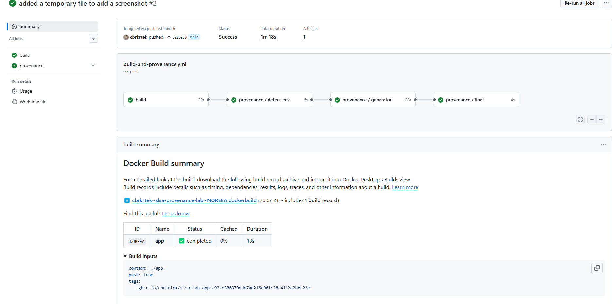
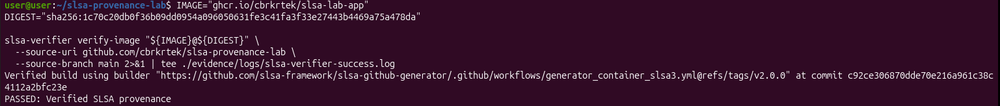
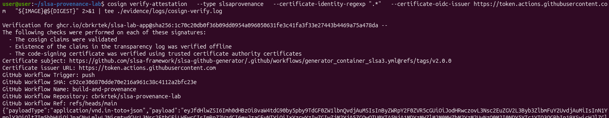
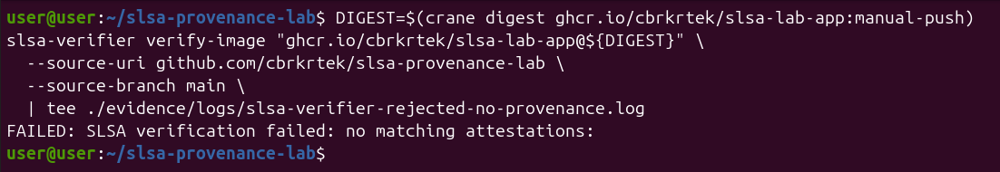
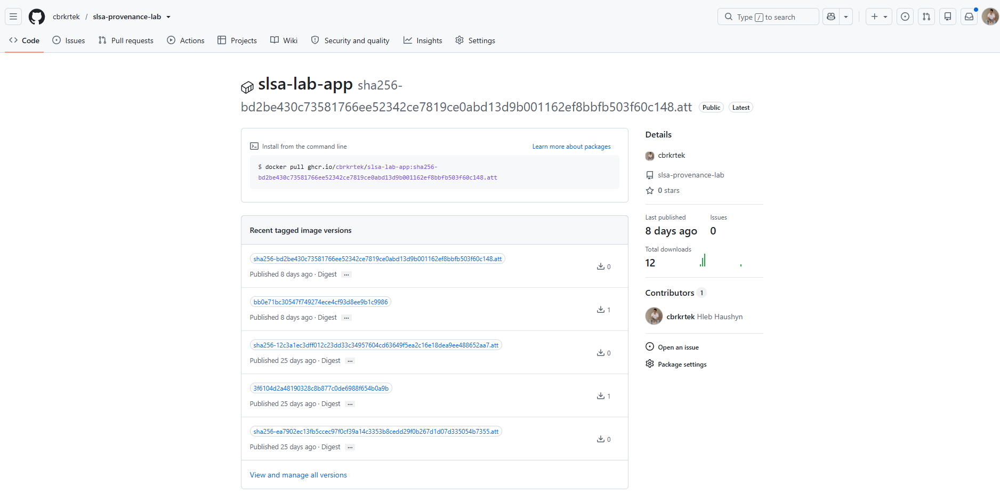
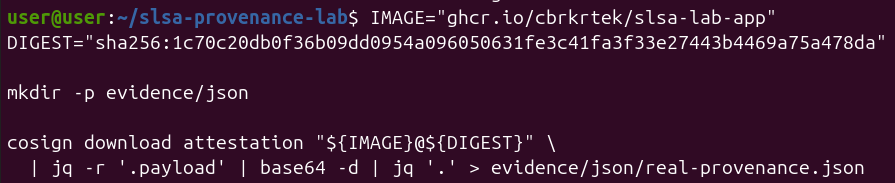
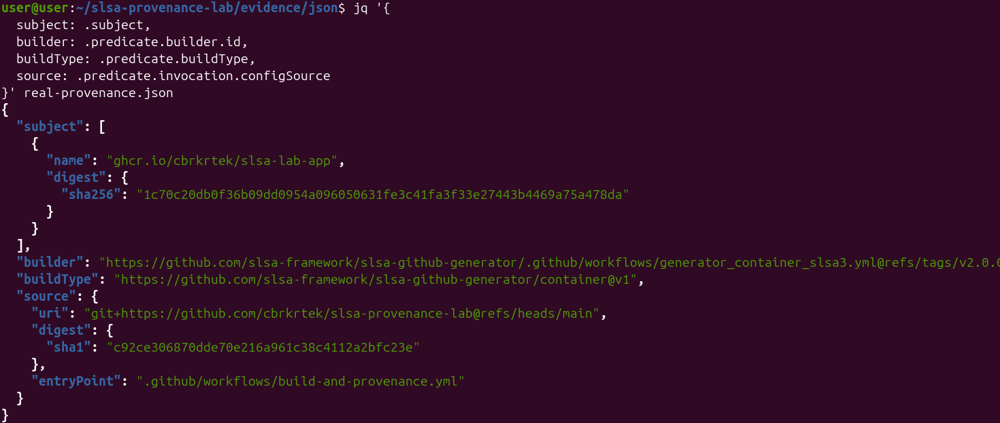
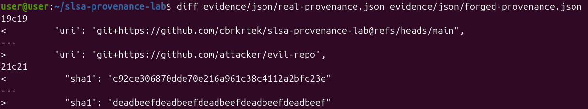
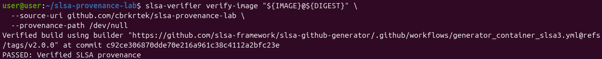
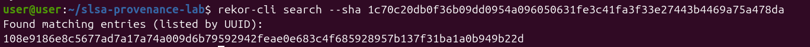

What signing actually tells you
A Cosign signature says: this hasn't changed since someone signed it. That's the whole claim. It says nothing about who built it, from what code, or on what CI. If the identity or the job that signs is compromised, the attacker can sign whatever they want, and Cosign will call it valid because the signature really is valid.
SLSA provenance asks a different question: was this built the way it claims, from this commit, by this exact workflow?
Signing proves nothing changed after the fact. Provenance is supposed to prove the build wasn't lied about.
The pipeline
A FastAPI app. On push to main it builds, pushes to GHCR, and generates SLSA Build L3 provenance through slsa-github-generator's container workflow.

A note before someone brings it up: yes, build and provenance live in the same YAML file. That doesn't break L3 isolation. The provenance job is a call to a pinned reusable workflow owned by the SLSA project. It runs on its own runner with its own OIDC identity, so my build job can't reach its process or its token. The isolation is about who owns the code and under which identity it runs, not about how many files you split the YAML into.
One caveat: this protects the integrity of the provenance. It doesn't promise that a compromised build step produces a clean image. Provenance tells you honestly what was built and from where.
Verifying the real image
IMAGE="ghcr.io/cbrkrtek/slsa-lab-app"
DIGEST="sha256:1c70c20db0f36b09dd0954a096050631fe3c41fa3f33e27443b4469a75a478da"
slsa-verifier verify-image "${IMAGE}@${DIGEST}" \
--source-uri github.com/cbrkrtek/slsa-provenance-lab \
--source-branch main
PASSED alone doesn't tell you much, so here's what it checks: the signature is in the public Rekor log, the builder matches the pinned workflow, and the source traces back to this repo and branch. All of it, or it fails.
For comparison, the same image with Cosign:
cosign verify-attestation \
--type slsaprovenance \
--certificate-identity-regexp ".*" \
--certificate-oidc-issuer https://token.actions.githubusercontent.com \
"${IMAGE}@${DIGEST}"
Cosign shows the same builder identity in the certificate output. It just doesn't make you check it against anything. Note the ".*" regex: it accepts any identity. slsa-verifier makes you declare what you expect up front and fails if reality doesn't match.
Attack №1: push an image outside the pipeline
The obvious real-world scenario: someone steals registry credentials and pushes an image directly, with no CI involved.
docker build -t ghcr.io/cbrkrtek/slsa-lab-app:manual-push ./app
docker push ghcr.io/cbrkrtek/slsa-lab-app:manual-push
DIGEST_MANUAL=$(crane digest ghcr.io/cbrkrtek/slsa-lab-app:manual-push)
slsa-verifier verify-image "ghcr.io/cbrkrtek/slsa-lab-app@${DIGEST_MANUAL}" \
--source-uri github.com/cbrkrtek/slsa-provenance-lab \
--source-branch mainFAILED: SLSA verification failed: no matching attestations:

Expected result. That digest never went through the pipeline, so no provenance is attached and there's nothing to verify. The boring attack is handled.
Attack №2: forge the provenance itself
This is the one I cared about. I downloaded the real provenance and decoded it:
cosign download attestation "${IMAGE}@${DIGEST}" \
| jq -r '.payload' | base64 -d | jq '.' > real-provenance.json

Then I changed the source repo to a fake one and the commit hash to garbage, leaving everything else alone, and diffed to confirm nothing else moved:
< "uri": "git+https://github.com/cbrkrtek/slsa-provenance-lab@refs/heads/main",
---
> "uri": "git+https://github.com/attacker/evil-repo",
< "sha1": "c92ce306870dde70e216a961c38c4112a2bfc23e"
---
> "sha1": "deadbeefdeadbeefdeadbeefdeadbeefdeadbeef"
My assumption: pass this file via --provenance-path, the verifier checks the signature against the payload, sees the mismatch, rejects it. Textbook tamper detection.
slsa-verifier verify-image "${IMAGE}@${DIGEST}" \
--source-uri github.com/cbrkrtek/slsa-provenance-lab \
--provenance-path forged-provenance.jsonPASSED: Verified SLSA provenance
I stared at that for a second. That's not supposed to happen.
Before getting excited (or panicked) about a bypass, I ran a sanity check: same command, but pointing at /dev/null.
slsa-verifier verify-image "${IMAGE}@${DIGEST}" \
--source-uri github.com/cbrkrtek/slsa-provenance-lab \
--provenance-path /dev/null
Same result.
What this actually means
My forgery wasn't good enough to slip past the signature check. It was never evaluated at all. In my testing, --provenance-path has no effect on verify-image: the tool appears to fetch whatever attestation is attached to that digest in the registry and verify that. (I'm inferring this from behavior; I didn't read the source.)
A few takeaways:
- I didn't find a bypass. The verdict is about the real attestation in the registry, and that one is genuine. A forged local file can't change it.
- I didn't test the crypto either. The test I wanted — "does the signature catch tampered content?" — never happened. To run it for real, I'd have to attach a different attestation to the same digest in the registry, which is a much harder problem than editing JSON on my laptop.
- There's a usability trap. The tool accepts a flag that does nothing, and says
PASSED. Someone could easily believe they verified their local file when they didn't. If you script this, don't assume a flag is doing what its name suggests, and test with a known-bad input like I did.
I could have quietly reworded this to sound like I proved what I set out to prove. Didn't feel right, and this turned out more useful anyway.
Bonus: the transparency log entry
rekor-cli search --sha 1c70c20db0f36b09dd0954a096050631fe3c41fa3f33e27443b4469a75a478daFound matching entries (listed by UUID):
108e9186e8c5677ad7a17a74a009d6b79592942feae0e683c4f685928957b137f31ba1a0b949b22d